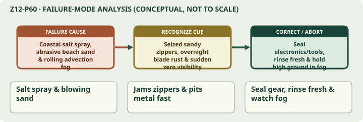

Z12-P60 · Extreme environments · New manuscript
Account for coastal salt spray, wind-driven sand, fog and rapid gear corrosion
Prevent seized zippers, corroded blades, fog disorientation and chafed gear in harsh salty coastal climates.
When it applies · Ocean shorelines, salt marshes, island camps and Great Lakes windswept sand dunes.
Equipment · Sealed waterproof bags for electronics/tools, fresh rinse water for zippers/metal, goggles and corrosion-resistant gear habits.

Actions
- Keep electronics, compasses, cameras, stove jets and metal tools sealed inside airtight waterproof bags whenever wind blows fine salt spray or abrasive beach sand—sand jams zippers and stove valves while salt pits carbon steel overnight.[K04, E02, N07, ED]
- Rinse salt and sand out of tent zippers, fishing/camp hardware and metal blades with clean freshwater promptly after coastal exposure, drying and lightly oiling metal parts.[K04, E20, ED]
- Expect coastal marine fog to roll inland rapidly, erasing headland landmarks and chilling damp skin—stage compass, tide table and windproof dry shell at the top of your pack.[N07, E15, X15]
Failure recognition · Pitching a tent directly in blowing dune sand with open zippers and leaving an un-oiled carbon knife exposed to night sea mist until rusted shut.[K04, E20, E16]
Verify · Confirm electronics/tools ride in sealed bags, zippers stay brushed clean of grit and wind/fog navigation tools stay reachable.[K04, E02, N07, ED]
Stop or change course · When dense coastal fog and high surf combine on rocky headlands, halt shoreline travel on high dry land until visibility and tide safety return.[N07, X15, X06]
Evidence and editorial notes
- E02 · NPS · Ten Essentials (current web edition)
- Section: Navigation; insulation; emergency shelter; emergency food and water · Conditions: Outdoor trips; adjust kit to season and route
Support: Carry essential systems including navigation, insulation, light, water and emergency shelter.
Limitations: Carrying items without practice or cold-weather verification does not ensure readiness. · Conflicting evidence: None; baseline kit system architecture.
Editorial note: Supports failure-mode packing and kit verification cards. · Specialist reviewer: Field education and search and rescue
Primary source · checked 2026-11-24 - E15 · NWS · Cold Weather Safety (current web edition)
- Section: Cold Weather Safety > Wind Chill and Dressing for Cold · Conditions: Cold, windy conditions where exposed skin cools rapidly
Support: Wind removes the thin warm air boundary layer around skin and permeable fabrics, sharply accelerating heat loss and frostbite onset; windproof outer shells and sheltered microclimates mitigate convective loss.
Limitations: Wind chill charts apply to exposed skin and do not change freezing point of water or equipment. · Conflicting evidence: None; clarifies physical mechanism of convective heat loss.
Editorial note: Supports wind-block geometry, shell layering, and wind-chill risk decisions. · Specialist reviewer: Cold-weather shelter and meteorology
Primary source · checked 2026-11-24 - E16 · NWS · Wind Safety (current web edition)
- Section: Wind Safety > High Wind Hazards · Conditions: Forecast or developing high winds, squalls, or straight-line winds
Support: High winds topple trees, loft debris, and stress lightweight shelters beyond fabric and anchor limits; relocate out of timbered fall zones and into substantial shelter before gusts peak.
Limitations: Tents and tarps lack standardized wind-speed survival guarantees across soil types and pitch angles. · Conflicting evidence: None; avoids unvalidated mph ratings for improvised pitches.
Editorial note: Drives high-wind shelter inspection, guying limits, and abandonment thresholds. · Specialist reviewer: Weather safety and shelter equipment
Primary source · checked 2026-11-24 - E20 · NPS · Camping: What to Bring (current web edition)
- Section: Camping: What to Bring > Shelter and Sleep System · Conditions: Overnight camping across three-season and cool conditions
Support: Match tent/tarp, groundsheet, sleeping pad, and sleeping bag ratings to expected night lows and precipitation; test pitching and inspect poles, zippers, and stakes before departure.
Limitations: Manufacturer comfort ratings assume dry insulation, ground pad use, and adequate caloric intake. · Conflicting evidence: None; reinforces pre-trip inspection and dry-sleep separation.
Editorial note: Anchors manufactured shelter selection, groundsheet fit, and gear readiness. · Specialist reviewer: Shelter equipment and field education
Primary source · checked 2026-11-24 - K04 · USDA Forest Service · Handtools for Trail Work (0523-2810-MTDC) (agency handbook)
- Section: Sharpening, Filing and Handle Maintenance · Conditions: Maintaining cutting edges and wood tool handles in field or shop
Support: Secure the tool firmly before filing or honing, keep fingers behind file guards, preserve factory bevel geometry without overheating steel and replace loose or cracked handles rather than taping them.
Limitations: Field touch-up honing does not correct chipped, cracked or heat-annealed steel blades. · Conflicting evidence: None; separates routine edge maintenance from unsafe handle patching.
Editorial note: Guides sharpening, rust prevention and handle-failure retirement cards. · Specialist reviewer: Tool maintenance and forestry safety
Primary source · checked 2026-11-24 - N07 · NWS · Fog Safety (current web edition)
- Section: Fog Safety > Visibility Loss and Travel Hazards · Conditions: Dense fog, valley mist, sea fog and blowing-snow whiteout
Support: Fog and whiteout collapse visual landmarks and depth perception rapidly, causing disorientation and unintentional terrain/traffic hazards; halt exposed travel early and rely on verified checkpoints or stay put.
Limitations: Compass bearings alone cannot reveal hidden cliffs, thin ice or drop-offs in zero visibility. · Conflicting evidence: Aligns with B014-P11 whiteout guidance.
Editorial note: Supports whiteout/fog stop thresholds and short-leg navigation boundaries. · Specialist reviewer: Meteorology and search and rescue
Primary source · checked 2026-11-24 - X06 · NOAA NWS · Marine Weather Services (current web edition)
- Section: Marine Weather Services > Small Craft Advisories, Gale Warnings and Sea State · Conditions: Coastal, Great Lakes and open-water marine zones
Support: Marine forecasts issue Small Craft Advisories, Gale, Storm and Hazardous Seas Warnings; wind opposing tide or shallow shoals steepens breaking waves dramatically faster than inland forecasts indicate.
Limitations: Local fetch and headland funneling can exceed regional zone forecasts. · Conflicting evidence: None; integrates with NOAA-NWR marine channels.
Editorial note: Guides marine weather thresholds and coastal-craft abort cards in Z12. · Specialist reviewer: Marine meteorology and maritime safety
Primary source · checked 2026-11-24 - X15 · NOAA NOS · Tides and Water Levels Education Tutorial (current web edition)
- Section: Tides and Water Levels > Tidal Range, Cutoffs and Currents · Conditions: Ocean coastlines, sea caves, tidal flats and rocky headlands
Support: Tidal cycles raise water levels rapidly along shallow flats, narrow coves and rocky headlands, trapping hikers against cliffs and generating strong reversing currents in inlets; verify local tide tables before entering coastal routes.
Limitations: Wind-driven storm surge and king tides push water well above normal predicted high-tide marks. · Conflicting evidence: None; pairs with NOAA-COAST.
Editorial note: Grounds tidal-cutoff, headland and mudflat planning cards in Z12. · Specialist reviewer: Coastal navigation and marine safety
Primary source · checked 2026-11-24
Source lineage · NWS marine/fog safety and field maintenance; new manuscript · Classification · New manuscript.